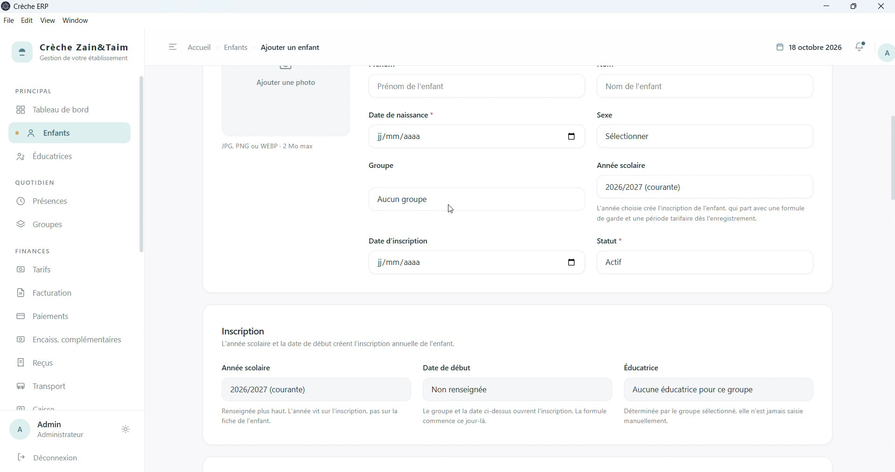
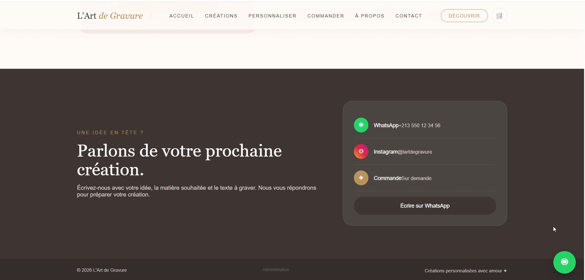
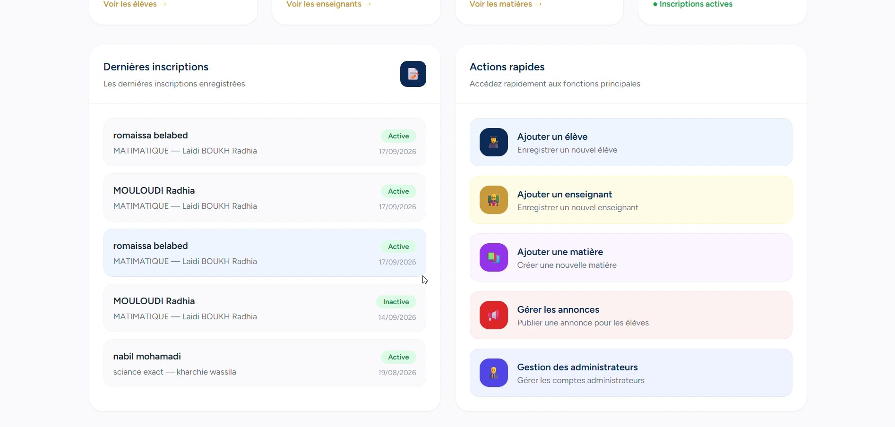

Support IT & Help Desk
Assistance, diagnostic, résolution d'incidents et accompagnement au quotidien des utilisateurs.
Ingénieure en informatique · IT Support Engineer
J'accompagne les entreprises dans l'exploitation de leurs systèmes informatiques, le déploiement de solutions de gestion et la digitalisation de leurs activités. Je conçois également des applications web adaptées aux besoins métiers, avec une attention particulière portée à la fiabilité, à l'expérience utilisateur et à l'efficacité opérationnelle.
Présentation
Mon profil combine le support informatique, les systèmes d'information et le développement de solutions numériques adaptées aux besoins des organisations. J'interviens dans l'assistance aux utilisateurs, l'exploitation de logiciels de gestion, SAP et les systèmes ERP, ainsi que dans la conception et le développement d'applications web et d'outils métier.
J'accompagne les petites entreprises comme les grandes organisations dans l'amélioration de leurs outils informatiques, la digitalisation de leurs processus et la mise en place de solutions pratiques, fiables et évolutives. Mes compétences couvrent également les bases de données, SQL et la gestion de versions avec Git/GitHub.
Mes projets illustrent cette approche à travers des solutions dédiées à la gestion d'une crèche et d'un jardin d'enfants, d'un cabinet dentaire et d'un établissement scolaire.
01 — Expertise
Compétences concrètes, centrées sur le support IT, les environnements métier et l'accompagnement des utilisateurs.
Assistance, diagnostic, résolution d'incidents et accompagnement au quotidien des utilisateurs.
Support des environnements SAP et analyse des incidents au service des opérations métier.
Déploiement, paramétrage et suivi de solutions de gestion (ERP) pour les organisations.
Conception et développement d'applications web et d'outils de gestion adaptés aux besoins.
02 — Projets
Trois applications de gestion conçues comme de vrais produits : interface, données, usage métier. Les démonstrations vidéo originales sont conservées à l'identique.

Démo — vidéo originale conservée · 45,5 Mo
Dossier 01
Application de gestion intégrée pour crèche et jardin d'enfants : dossiers des enfants, inscriptions, présences, formules tarifaires, facturation, paiements et suivi de caisse.

Démo — vidéo originale conservée · 68 Mo
Dossier 02
Boutique en ligne pour un atelier de gravure personnalisée : catalogue de créations gravées, personnalisation des articles, panier et passage de commande, complétés par une interface d'administration protégée pour gérer produits, catégories, commandes et réglages du site.

Démo — vidéo originale conservée · 78,7 Mo
Dossier 03
Plateforme de gestion scolaire pour l'Académie El Tafawok : back-office web pour administrer élèves, enseignants, matières, groupes, inscriptions, paiements, présences, revenus et annonces, complété par une API REST sécurisée destinée à l'application mobile des parents.
Expertise — intervention terrain
Déploiement et support de la solution COSPACK, assistance technique et accompagnement des utilisateurs, contribution au suivi informatique et au reporting. Le détail de cette expérience figure dans la section « Expérience ».
Autre réalisation
Application de gestion pour cabinet dentaire : interface web et organisation adaptée aux besoins métier. Présentation textuelle uniquement — aucune ressource visuelle disponible à ce jour.
03 — Expérience
Expériences confirmées — support IT et support applicatif SAP en environnement de production.
04 — Compétences
Technologies et outils issus du site et du profil — sans niveau d'expertise ajouté.
Flutter / Dart : exploration documentée dans le profil — « selon les projets réalisés ».
05 — Contact
Pour discuter d'un projet ou d'une opportunité.